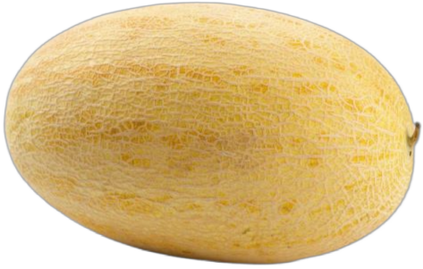
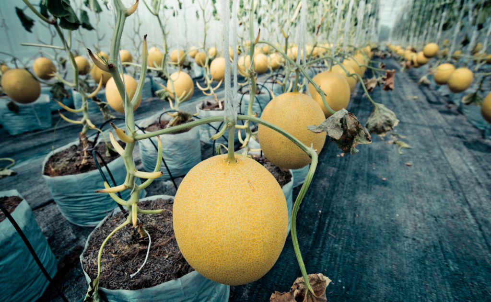
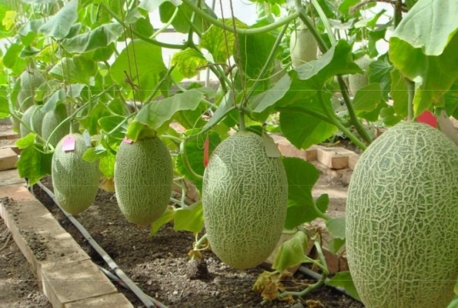

Это дыня или нядыль?
Cейчас мы ответим на этот вопрос!

Дыня — растение семейства Тыквенные вид рода Огурец бахчевая культура.
Родиной дыни считается Средняя Азия и Малая Азия. Дыня — тепло и светолюбивое растение, устойчивое к засолению почвы и засухе, плохо переносит повышенную влажность воздуха. На одном растении в зависимости от сорта и места возделывания может сформироваться от двух до восьми плодов, массой от 1,5 до 10 кг. Плод дыни - тыквина имеет шаровидную или цилиндрическую форму, зелёной, жёлтой, коричневой или белой окраски, как правило с зелёными полосками. Период вызревания — от двух до шести месяцев.

Дикорастущая дыня в настоящее время практически не встречается. Культурные формы получены путём отбора из азиатских сорно-полевых видов, которые сохранились и поныне. Окультуривание произошло предположительно в Северной Индии и в прилежащих к ней районах Ирана и Средней Азии за много веков до н. э. Постепенно культурная дыня стала распространяться в соседние районы как на запад — в Среднюю и Малую Азию, так и на восток до Китая. Известно, что её выращивали в Древнем Египте.
В Россию, в Нижнее Поволжье, дыню завезли из Средней Азии в 15—16 столетии. По другой версии, в 17 веке их доставляли в Архангельск из Англии, где дыни выращивали в парниках. Вскоре и в Москве были построены аналогичные парники. При Петре первом в них получали крупные и вкусные дыни.

О выращивании дынь в Москве в 16 веке сообщают С. Герберштейн и Дж. Флетчер, в 1606 году Жак Маржерет описывает московские «крупные дыни, лучшие, чем я ел в других местах». При царе Алексее Михайловиче дыню и арбуз выращивали в теплицах даже под Москвой в Измайлово , но в дальнейшем разведение бахчевых культур в закрытом грунте практиковалось очень редко.
Узнайте всё о арбузе!